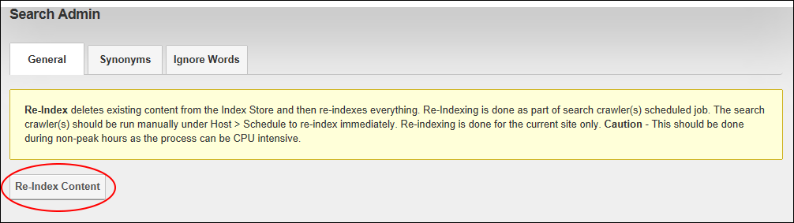

How to manually re-index search content for a single site using the Search Admin module. Re-indexing content maximizes the efficiency of the search engine and ensures all new content is included in searches. Although search content is scheduled to re-index every 30 minutes by default using the Host > Scheduler module, it is recommended that content be re-indexed manually if there have been significant changes since the last indexing. Note: SuperUsers can disable or modify the automatic re-indexing task called "Search Engine Scheduler".
